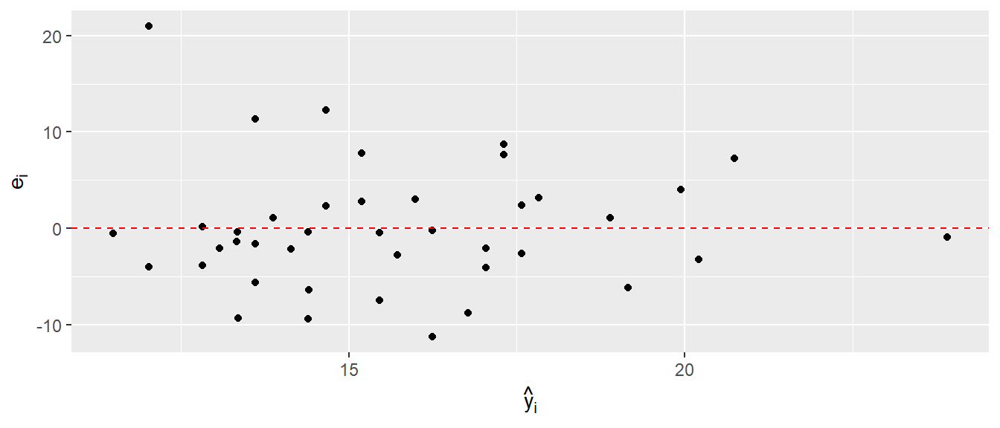
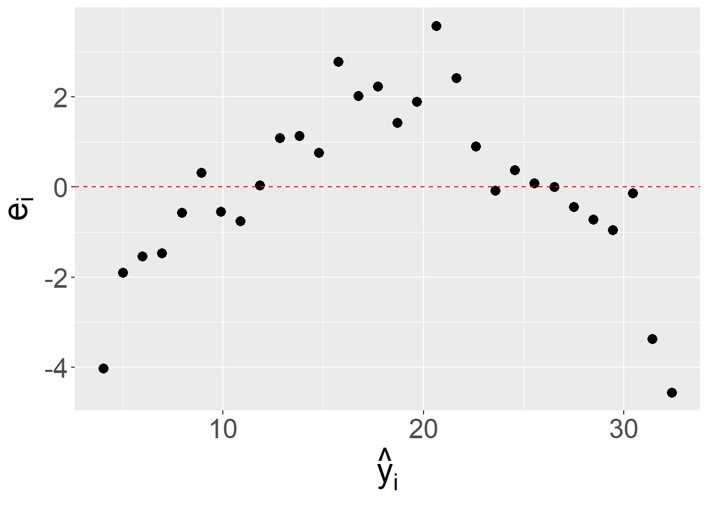
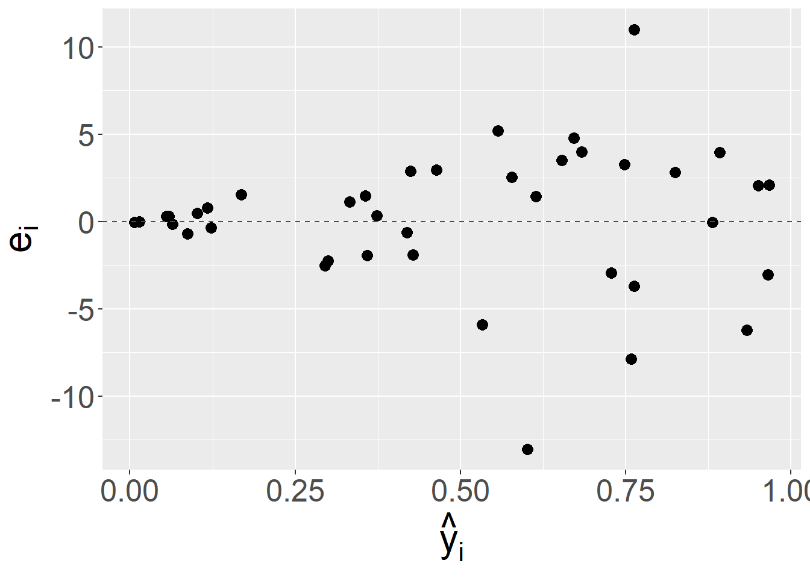
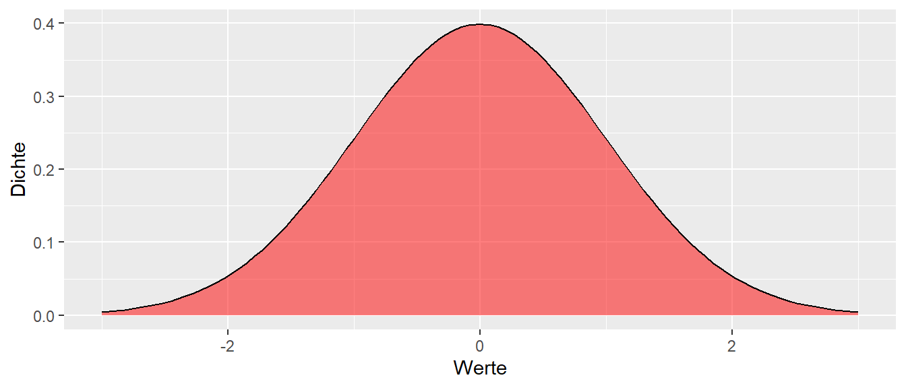

15 Modellfit
Nachdem ein Modell mittels einer einfachen linearen Regression an die Daten gefittet wurde, sollte immer überprüft werden ob das Modell tatsächlich auch den Annahmen entspricht. Ein zentrales Mittel dazu ist eine Analyse der Residuen.
15.1 Residuen
Dazu schauen wir uns zunächst noch einmal an, was überhaupt Residuen \(e_i\) sind und gehen noch mal von den grundlegenden Modellannahmen aus (siehe Formel \(\eqref{eq-sim-model-lr}\)).
\[\begin{equation} y_i = \beta_0 + \beta_1 \cdot x_i + \epsilon_i, \qquad \epsilon_i \sim \mathcal{N}(0,\sigma^2) \label{eq-sim-model-lr} \end{equation}\]
Das lineare Regressionsmodell geht von einem linearen Zusammenhang in den Koeffizienten zwischen der Variablen \(x_i\) und den Variablen \(y_i\) aus. Additiv kommt daz ein normalverteilter Fehler \(\epsilon_i\). Die Normalverteilung der \(\epsilon_i\) habem einen Erwartungswert von \(\mu = 0\) und eine Standardabweichung von \(\sigma\). Die Standardabweichung \(\sigma\) ist zunächst unbekannt und muss über die Daten abgeschätzt werden. Dies führt dazu, dass \(y_i\) für jeden gegebenen Wert von \(x_i\) einer Normalverteilung mit \(\mathcal{N}(\beta_0 + \beta_1 x_i, \sigma^2)\) folgen und der bereits bekannten graphischen Darstellung (siehe Abbildung 15.1).
Für jeden gegebenen Wert von \(X\) sind die \(Y\)-Werte Normalverteilt. Die Varianz dieser Normalverteilungen ist gleich \(\sigma\) während der Mittelwert \(\mu\) immer um den Wert der Regressionsgeraden verschoben ist. D.h. die Streuung von \(\epsilon_i\) überträgt sich auf die Streuung von \(y_i\) für jeden gegebenen \(X\)-Wert. Ohne den zufälligen Einfluss der Fehlerwerte würden wir alle \(y_i\)-Werte perfekt auf der Regressionsgeraden erwarten. Dies deutet daher auch schon eine Möglichkeit an die Residuen \(\epsilon_i\) mittels der Daten abzuschätzen. Man verwendet die Abweichungen der beobachteten Werten \(y_i\) von den vorhergesagten Werten \(\hat{y}_i\) auf der Regressionsgeraden (siehe Formel \(\eqref{eq-sim-model-res-1}\)).
\[\begin{equation} \hat{\epsilon}_i = e_i = y_i - \hat{y_i} \label{eq-sim-model-res-1} \end{equation}\]
Diese Abweichungen \(e_i\) können als Schätzer \(\hat{\epsilon}_i\) für die wahren Residuen \(\epsilon_i\) verwendet werden (siehe Abbildung 15.2).
Da die Normalverteilungen der \(\epsilon_i\) für jeden \(X\)-Wert immer gleich sein sollten bis auf die Verschiebung von \(\mu_{Y|X}\), deutet dies ebenfalls eine erste Möglichkeit an, die Modellannahmen graphisch zu überprüfen. Wenn die Residuen \(e_i\) gegen die vorhergesagten Werte \(\hat{y}_i\) abgetragen werden, dann sollte die Verteilung der Residuen \(e_i\) überall nahezu gleich sein, da die Streuung \(\sigma\) unabhängig von der Position auf der Regressionsgerade ist.
In R können die Residuen mittels der Funktion residuals() bzw. der Kurzform resid() ermittelt werden. residuals() erwartet als Parameter das gefittete lm()-Objekt.
residuals(mod) 1 2 3 4 5 6
-9.3009275 -9.3682884 -11.2176585 -5.5721082 -6.3635647 -7.4162019
7 8 9 10 11 12
-3.9665569 -8.7152962 -3.8032898 -0.4662810 -2.0491941 -2.1323841
13 14 15 16 17 18
0.1867102 -0.3382894 -2.7300208 -4.0317532 -6.1475804 -0.3782884
19 20 21 22 23 24
1.1267111 -0.4588401 -2.0417532 -2.5546673 -0.2276585 2.3352546
25 26 27 28 29 30
-3.2075794 2.7949787 2.9982458 2.4379709 1.1162385 3.1894284
31 32 33 34 35 36
7.8049787 -0.9063196 4.0336013 11.3778918 7.6817897 8.6991516
37 38 39 40 41
12.3052546 7.2595065 20.9634431 -1.3171838 -1.5994700 Die anhand des Modells vorhergesagten Werte \(\hat{y_i}\) können mit der Funktion predict() berechnet. Diese Funktion werden wir uns im nächsten Kapitel noch ausführlich betrachten. Als Parameter wird wiederum das gefittete lm()-Modell übergeben.
predict(mod) 1 2 3 4 5 6 7 8
13.35093 14.39829 16.24766 13.61211 14.40356 15.45620 12.02656 16.77530
9 10 11 12 13 14 15 16
12.82329 11.49628 13.07919 14.14238 12.82329 13.34829 15.72002 17.04175
17 18 19 20 21 22 23 24
19.15758 14.39829 13.87329 15.45884 17.04175 17.57467 16.24766 14.66475
25 26 27 28 29 30 31 32
20.20758 15.19502 15.99175 17.57203 18.89376 17.83057 15.19502 23.90632
33 34 35 36 37 38 39 40
19.94640 13.61211 17.30821 17.31085 14.66475 20.74049 12.02656 13.32718
41
13.60947 Beide Funktionen, resid() und predict() geben die berechneten Werte in der Reihenfolge aus, in der die Originaldaten an lm() übergeben wurde. D.h. \(e_1\) und \(\hat{y}_1\) gehören zum ersten \(X\)-Wert \(x_1\) aus den Originaldaten. Mit Hilfe dieser beiden Variablen kann nun ein Residuenplot erstellt werden (siehe Abbildung 15.3).

Der Plot sollte im Optimalfall so aussehen, dass die Residuen \(e_i\) gleichmäßig oberhalb und unterhalb um die Nulllinie verteilt sind und keine weiteren Strukturen oder Muster im Abhängigkeit mit \(\hat{y}_i\) zu erkennen sind. In dem Residuenplot in Abbildung 15.3 ist zunächst einmal kein größeres Problem zu erkennen, bis auf den einen Wert links oben.
Um besser zu Verstehen wir Problem aussehen könnten, schauen wir uns zwei Residuenplots an, bei denen die Residuen \(e_i\) jeweils eine Struktur in Abhängigkeit von \(\hat{y}_i\) besitzen. (siehe Abbildung 15.4)


In Abbildung 15.4 (a) ist ein parabelförmiger Zusammenhang zwischen \(e_i\) und \(\hat{y}_i\) zu erkennen. Für kleine und große \(\hat{y}_i\) Werte sind die Residuen \(e_i\) negativ während für mittlere Werte von \(\hat{y}_i\) die Residuen \(e_i\) positiv sind. Diese deutet darauf hin, das zusäztliche Struktur in den Daten nicht im Modell erfasst wird und führt dazu, dass die Modellannahmen der Normalverteilung der \(\epsilon_i\) nicht erfüllt sind.
In Abbildung 15.4 (b) ist dagegen eine anderes Problem zu beobachten. Die Residuen \(e_i\) zeigen zwar keine Struktur bezüglich positiv zu negativen Werten, allerdings werden die Abweichung von \(0\) mit größer werdenen \(\hat{y}_i\) immer größer. Dies deutet darauf hin, das die Streuung der Daten nicht gleich ist. Dies wird als Heteroskedastizität bezeichnet und deutet wiederum auf eine Verletzung der Annahmen bei der Homoskedastitzität ausgegangen wird. D.h. die Streuung soll über den gesamten Bereich von \(\hat{y}_i\) gleich bleiben.
Definition 15.1 (Homoskedastizität) Wenn die Größe der Varianz der Residuen \(\epsilon_i\) in einem Regressionsmodell unabhängig von der Größe der Vorhersagevariable \(X_i\) ist, wird dies als Homoskedastizität bezeichnet. Die Streuung der Residuen ist dann für alle Werte \(X_i\) gleich. Wenn dies nicht der Fall ist, wird von Heteroskedastizität gesprochen.
Da die Varianz also konstant für alle Werte von \(X_i\) ist, trifft dies ebenfalls für die vorhergesagten Werte \(\hat{Y}_i\) zu. Daher werden bei vielen der Graphen die Residuen \(\hat{\epsilon}_i\) gegen die \(\hat{Y_i}\) abgetragen. Dies hat den Vorteil, dass später bei der multiplen Regression die gleiche Art von Graphen benutzt werden kann, um Homoskeastizität zu analysieren.
Beispiel 15.1 In Pickett u. a. (2021) wurde die Geschwindigkeitsverläufe von \(19\) Kajakathleten über \(200\) Meter untersucht. Im Rahmen der Analyse wurde ein Ermüdungsindex (FI%) aus der Differenz der Bootsgeschwindigkeit vom schnellsten durchschnittlichen Tempo über einen 10 m Abschnitt bis hin zum langsamsten gemessenen durchschnittlichen Tempo über einen anderen 10 m Abschnitt während eines Rennens berechnet und als Prozentsatz ausgedrückt: FI% = (Spitze – langsamste/Spitze) × 100. Der Zusammenhang zwischen der schnellsten Rennzeit und FI ist in Abbildung 15.5 abgetragen.
Ein Modellfit mit einem einfachen linearem Modell führt zu folgendem Ergebnis:
| Koeffizient | Wert | \(s_e\) | t-Wert | p-Wert |
|---|---|---|---|---|
| (Intercept) | 4184.77 | 382.52 | 10.94 | 0.00 |
| fatigue | -0.22 | 0.27 | -0.82 | 0.42 |
D.h. die Daten deuten auf keinen linearer Zusammenhang zwischen den Zeiten und dem Ermüdungsindex hin. Schauen wir uns einmal die Residuen \(e_i\) gegen die vorhergesagtem Modell \(\hat{y}_i\) an.
In Abbildung 15.6 zeigt sich, dass die Residuen nicht gleichmaßig über die Daten streuen, sondern ähnlich wie in Abbildung 15.4 auf einen parabelförmigen Zusammenhang deuten. Daher wurde in Pickett u. a. (2021) auch ein quadratischer Zusammenhang zwischen den Variablen untersucht. Dieser Ansatz führte zu einer deutlichen Verbesserung des Modellfits und deutete auch auf einen relevanten Zusammenhang zwischen den Daten.
Eine weitere Möglichkeit die Verteilung der Residuen zu überprüfen ist die Anfertigung von sogenannten qq-Plots. Dies ermöglichen etwas strukturierter die Verteilung der Residuen zu überprüfen.
15.1.1 Quantile-Quantile-Plots
qq-Plot ist die Kurzform von Quantile-Quantile-Plot. D.h. es werden die Quantilen von zwei Variablen gegeneinander abgetragen. Um die Funktionsweise besser zu verstehen schauen wir uns erst einmal ein Spielzeugbeispiel an. In Tabelle 15.2 ist eine kleiner Datensatz mit \(n = 5\) Datenpunkten angezeigt.
| y |
|---|
| -2.0 |
| 5.0 |
| -1.2 |
| 0.1 |
| 7.0 |
Wir wollen jetzt überprüfen ob dieser Datensatz einer Normalverteilung folgt (Wohlwissend das mit fünf Datenpunkten keine Verteilungsannahme überprüft werden kann). Dazu schauen wir uns zunächst noch einmal die bekannte Standardnormalverteilung \(\Phi(z) = \mathcal{N}(\mu=0,\sigma^2=1)\) an (siehe Abbildung 15.7).

Im ersten Schritt unterteilen wir die Standardnormalverteilung \(\Phi(z)\) in \(n+1 = 6\) gleich große Flächen. D.h. die durch die Flächen bestimmten Abschnitte haben alle die gleiche Wahrscheinlichkeit (=Fläche unter der Dichtefunktion). Die Flächen werden durch die jeweiligen Trennpunkte unterteilt. Diese Trennpunkte sind die Quantilen der Verteilung.
In unserem Beispiel haben wir nun \(n=5\) Datenpunkte. Daher unterteilen wir die Verteilung in \(6\) gleich große, bezogen auf die Fläche, Abschnitte. Die Abschnitte haben somit jeweils eine Fläche von \(p = \frac{1}{6} = 0.17\). D.h. \(\frac{1}{6}\) der Werte von \(\Phi(x)\) liegen links des ersten Trennpunktes, \(\frac{2}{6}\) der Werte von \(\Phi(x)\) liegen links des zweiten Trennpunktes, usw.. Dadurch werden durch die Trennpunkte die jeweiligen Quantilen bestimmt. Bezogen auf unserem Ziel zu überprüfen ob unsere beobachteten Daten einer bestimmten theoretischen Verteilung folgen werden die theoretischen Quantilen die unter der Verteilungsannahme erwartet werden bestimmt.
Die Idee hinter dem qq-Plot besteht also darin, die empirischen Quantilen gegen die theoretischen Quantilen abzutragen (siehe Abbildung 15.9). Wenn die beobachteten Daten aus der gleichen Verteilung wie die theoretische Verteilung stammen, dann sollten die Punkte einer Geraden folgen. Die Steigung der Geraden ist \(1\), wenn es sich um die identischen Verteilungen handelt. Wenn die Steigung \(\neq1\) ist, dann kommen die Datenpunkte aus der gleichen Verteilungsfamilie sind aber um einen Skalierungsfaktor unterschiedlich bzw. um den Mittelwert verschoben. Die Punkte sollten aber trotzdem auf einer Geraden liegen. Daher ist es nicht notwendig die exakte theoretische Verteilung zu kennen, sondern es reicht zu wissen aus welcher Familie die Verteilung stammt.
Um die empirischen Quartilen zu bestimmen, werden dazu zunächst die beobachteten Datenpunkte aus Tabelle 15.2 aufsteigend nach der Größe sortiert (siehe Tabelle 15.3). Diese Werte können als empirische Quantilen bezeichnet werden. Unter der Annahme, dass die Werte eine repräsentative Stichprobe aus der Verteilung darstellen, erwarten wir, dass wenn wir weitere Werte beobachten würden, etwa \(\frac{1}{6}\) der Werte kleiner als der kleinste Wert wären, \(\frac{2}{6}\) der weiteren Werte kleiner als der 2. kleinste Wert wären und so weiter und so fort.
| kleinster | 2.kleinster | mittlerer | 2.größter | größter |
|---|---|---|---|---|
| -2 | -1.2 | 0.1 | 5 | 7 |
Daher, wenn die beobachteten Werte der angenommenen theoretischen Verteilung folgen, dann sollte ein Graph der empirischen Quartilen gegen die theoretischen Quartilen nahezu (Stichprobenvariabilität) einer Geraden folgen.
In Abbildung 15.10 sind die empirischen Quartilen gegen die theoretischen Quantilen für unser kleines Beispiel abgetragen. Tatsächlich ist es in diesem Fall schwierig eine Gerade zu erkennen bzw. von einer zu sprechen, da es sich nur um besagte fünf Wert handelt. Nochmals, mit \(n=5\) kann eine realistische Verteilungsannahme nicht überprüft werden.
Wenn der Datensatz größer ist, dann eignet sich ein qq-Plot allerdings sehr gut Abweichungen zu erkennen. In Abbildung 15.11 sind verschiedene Beispiele abgetragen.
In Abbildung 15.11 (a) ist ein perfekter Zusammenhang zwischen den empirischen und den theoretischen Quantilen abgebildet. In diesem Falle wurden synthetisch für 50 normalverteiltet Zufallsdaten ein qq-Plot erstellt. Es ist zu sehen, das tatsächlich eine Gerade den Zusammenhang beschreibt. In Abbildung 15.11 (b) ist dagegen ein Zusammenhang abgetragen, bei dem die empirischen und die theoretische Verteilung nicht zusammenpassen. In diesem Fall sind die haben die Randwerte der empirischen Vereteilung eine höhere Wahrscheinlichkeit als die unter der theoretischen Verteilung zu erwarten ist. D.h. extreme Werte kommen in der beobachteten Verteilung öfter in der theoretischen Verteilung vor. Dies deutet darauf hin, dass die Streuung der Daten möglicherweise nicht korrekt modelliert wurde. In diesem Fall, wird von einer tail heavy Verteilung gesprochen.
In Abbildung 15.11 (c) ist der gegenteilige Effekt abgetragen. Hier hat die theoretische Verteilung mehr Wahrscheinlichkeitsmasse in den Randzonen als die empirische Verteilung. Die beobachtete Verteilung ist tail light. Entsprechend ist in Abbildung 15.11 (d) ein Beispiel abgebildet, bei dem nur eine der Randzonen zu viel Wahrscheinlichkeitsmasse besitzt. Da die theoretische Verteilung wiederum die Normalverteilung ist und diese Symmetrisch ist, deutet diese darauf hin, das die empirische Verteilung ähnlich wie in Abbildung 15.11 (b) in der rechten Randzone zu viele Werte hat und daher Rechtsschief ist.
Für unsere Daten ergibt sich das folgende qq-Diagramm (siehe Abbildung 15.12)

Der Graph sieht zunächst einmal gar nicht so schlecht aus. Allerdings deutet die Abweichung rechts oben darauf hin, das möglicherweise die Streuung nicht korrekt abgeschätzt wurde. Insbesondere ist ein Wert zu sehen, der im Verhältnis zu den anderen Werten schon relativ weit von der Gerade weg ist. Daher ist es hier angezeigt, diesen Wert noch einmal genauer zu untersuchen.
15.1.2 qq-Plot in R
In R gibt es zwei direkte Methoden einen qq-Plot zu erstellen. Mittels des Standardgrafiksystem können mit den Funktionen qqnorm() und qqline() qq-Plots mit der dazugehörigen Gerade erstellt werden. Für das ggplot()-System stehen die geoms geom_qq() und geom_qq_line() zur Verfügung. Wichtig ist hierbei, das in aes() der Parameter sample definiert werden muss. Für unser Spielzeugbeispiel sieht dies folgendermaßen aus:
df_toy <- tibble::tibble(y = c(-2, 5, -1.2, 0.1, 7))
ggplot(df_toy, aes(sample=y)) +
geom_qq() +
geom_qq_line()ggplot()
15.1.3 Standardisierte Residuen
Eine Möglichkeit so einen Wert zu untersuchen, ist abzuschätzen wie ungewöhnlich der zu dem Residuen \(e_i\) gehörende \(y_i\)-Wert ist. Ein Problem der einfachen Residuen \(e_i\) ist, dass diese laut der Modellannahmen die gleiche Varianz \(\sigma^2\) haben sollten. Allerdings, auf Grund der Art, wie die \(e_i\) berechnet werden, folgt die Randbedingung, dass die Summe der \(e_i\) gleich Null ist, \(\sum_{i=1}^n e_i = 0\). Dies führt dazu, dass die einfachen Residuen nicht unanbhängig voneinander sind und nicht immer Homoskedastizität besitzen. Daher gibt es eine weitere Art Residuen anhand des Modell zu berechnen, die nicht unter diesen Beschränkungen leiden. Dies sind die standardisierten Residuen \(e_{Si}\). Dazu müssen wir uns zunächst mit Hebelwerte \(h_i\) beschäftigen.
15.1.3.1 Hebelwerte
Wenn ein Modell an die Daten gefittet wird, dann haben nicht alle Werte den gleichen Einfluss auf die Modellparameter. Manche Werte üben einen stärkeren Einfluss auf das Modell aus als andere Werte. In Abbildung 15.14 ist ein Beispiel abgebildet für einen Datensatz bei dem ein einzelner Punkt einen übermäßig großen Einfluss auf das Modell ausübt.
Der einzelen Punkt rechts oben in Abbildung 15.14 hat einen großen Einfluss auf die resultierende Regressionsgerade wie in der Abbildung zu sehen ist. Der Einfluss ist zum Teil durch den großen Abstand des \(x_i\)-Wertes vom Mittelwert der \(x_i\)-Werte \(\bar{x}\) bestimmt. Der Einfluss jedes einzelnen \(x\)-Wertes wird mittels der sogenannten Hebelwerte \(h_i\) bestimmt. Die genaue Berechnung der Hebelwerte \(h_i\) ist für das weitere Verständnis allerdings nicht wichtig, sondern mehr das Verständnis des Konzepts. Die Hebelwerte \(h_i\) können Werte in \(h_i \in [1/n,1]\) annehmen. In R können die Hebelwerte mit der Funktion hatvalues() berechnet werden.
Tragen wir in die Grafik die Hebelwerte in die Grafik Abbildung 15.14 ein (siehe Abbildung 15.15), dann ist zu sehen, dass der abgesetzte Wert auch den größten Hebelwert hat.
Eine Daumenregel für die Hebelwerte ist der Schwellenwert von \((2k+2)/n\), wobei \(k\) die Anzahl der unabhängigen Variablen ist. Für den Beispieldatensatz in Abbildung 15.15 würde sich daher ein Wert von \((2\cdot 1+2)/30 = 0.13\) ergeben. Entsprechend wäre der abgesetzte Wert mit einem Hebelwert von \(h_i = 0.54\) als problematisch einzustufen.
Nach diesem kurzen Exkurs zu den Hebelwerten \(h_i\), schauen wir uns für unsere weitere Betrachtung der Residuen zunächst den Zusammenhang zwischen der Varianz der Residuen in der Population \(\sigma^2\) und der Varianz der geschätzten Residuen \(\sigma^2(\hat{\epsilon}_i) = \sigma^2(e_i)\) an. Es gilt:
\[\begin{equation} \sigma^2(e_i) = \sigma^2 (1 - h_i) \label{eq-slm-model-vare_i} \end{equation}\]
D.h. wenn ein Datenpunkt \(x_i\) einen kleineren Einfluss auf das Modell ausübt und dementsprechend einen kleinen Hebelwert \(h_i\), dann wird die Varianz für diesen Wert nahezu korrekt eingeschätzt. Hat der Wert \(x_i\) allerdings, einen großen Hebelwert \(h_i\), führt die dazu, dass die Varianz für diesen Wert stärker unterschützt wird. Dieser Zusammenhang kann dazu benutzt werden standardisierte Residuen zu erstellen.
\[\begin{equation} e_{Si} = \frac{e_i}{\hat{\sigma}\sqrt{1-h_i}} \label{eq-slm-model-stresid} \end{equation}\]
Die standardisierten Residuen \(e_{Si}\) haben dazu die Eigenschaft, dass sie eine Varianz und damit Standardabweichung von \(\sigma^2(e_{Si}) = 1\) haben, also Standardnormalverteilt \(\Phi(z)\) sein sollten. Dadurch können Abweichungen von den Modellannahmen leichter Identifiziert werden, da die Skala normiert ist. In R kann die standardiserten Residuen \(e_{Si}\) mittels der Funktion rstandard() berechnet werden. Eine Standardgrafik zum inspizieren der standardisierten Residuen ist wiederum eine Abbildung der \(e_{Si}\) gegen die \(\hat{y}_i\).
Die Abbildung 15.16 sieht relativ ähnlich zu Abbildung 15.3 aus. Durch die Änderung der Skala ist jetzt aber leichter abschätzbar ob die Verteilung der erwarteten Normalverteilung folgt. D.h. etwa \(\frac{2}{3}\) der Werte sollten zwischen \(-1\) und \(1\) liegen und etwa \(95\%\) zwischen \(-2\) und \(2\). Bis auf den einen Punkt oben rechts, sieht alles soweit unauffällig aus.
15.1.4 Studentized Residuals
Die letzte Art von Residuen sind die sogenannten Studentized Residuals \(e_{Ti}\), die mittels der folgenden Formel berechnet werden.
\[\begin{equation} e_{Ti} = \frac{e_i}{\hat{\sigma}_{(-i)}\sqrt{1-h_i}} \label{eq-slm-model-rstudent} \end{equation}\]
Die Formel \(\eqref{eq-slm-model-rstudent}\) ist sehr ähnlich zu derer für die standardisierten Residuen, der einzige Unterschied ist der Term \(\hat{\sigma}_{(-i)}\). Dieser bezeichnet die Residualvarianz wenn dass Modell ohne den Datenpunkt \(i\) gefittet wird. D.h. wie stark verändert sich die Schätzung der Varianz wenn ein Datenpunkt weggelassen wird. Normalerweise sollte eine einzelner Punkt keinen übermäßigen Einfluss auf die geschätzte Varianz haben, daher können die Studentized Residuals dazu verwendet werden problematische Datenpunkte zu identifizieren. Wenn die tatsächlichen Residuen einer Normalverteilung folgen, dann kann gezeigt werden, dass die Studentized Residuals einer \(t\)-Verteilung mit \(N-k-2\) Freiheitsgeraden folgen. Daher könnte sogar ein formaler statistischer Test durchgeführt werden. In R können die Studentized Residuals \(e_{Ti}\) mittels der Funktion rstudent() berechnet werden und werden entsprechend den anderen Residuen in dem üblichen Graphen gegen die vorhergesagten Werte \(\hat{y}_i\) abgetragen.
adl-Modell
15.1.5 Übersicht über die Residuenarten
In Tabelle 15.4 sind noch einmal die drei Arten von Residuen und die dazugehörenden R Hilfsfunktionen für lm() aufgelistet.
R Funktionen
| Typ | Berechnung | Ziel | R Funktion |
|---|---|---|---|
| Einfache Residuen | \(e_i = y_i - \hat{y}_i\) | Verteilungsannahme | resid() |
| Standardisierte Residuen | \(e_{Si} = \frac{e_i}{\hat{\sigma}\sqrt{1-h_i}}\) | Verteilungsannahme | rstandard() |
| Studentized Residuen | \(e_{Ti} = \frac{e_i}{\hat{\sigma}_{(-i)}\sqrt{1-h_i}}\) | Einfluss auf Modell | rstudent() |
15.1.6 Ausgabe von summary() (continued)
Nach dieser Betrachtung der Residuen, die nach jedem Modellfit inspiziert werden sollten um zu überprüfen ob die Modellannahmen angemessen sind schauen wir uns noch einmal kurz die Ausgabe von summary() an.
Call:
lm(formula = adcs ~ adas, data = adl)
Residuals:
Min 1Q Median 3Q Max
-11.2177 -3.8033 -0.4663 2.7950 20.9634
Coefficients:
Estimate Std. Error t value Pr(>|t|)
(Intercept) 26.5445 4.3052 6.166 3.05e-07 ***
adas -0.2638 0.1015 -2.599 0.0131 *
---
Signif. codes: 0 '***' 0.001 '**' 0.01 '*' 0.05 '.' 0.1 ' ' 1
Residual standard error: 6.516 on 39 degrees of freedom
Multiple R-squared: 0.1477, Adjusted R-squared: 0.1258
F-statistic: 6.757 on 1 and 39 DF, p-value: 0.01312Nach der Wiedergabe des gefitten Modells erfolgt direkt eine Zusammenfassung der Residuen über Minimum und Maximum, Q1 und Q3 und den Median. Jetzt sollte daher auch besser nachvollziehbar sein, warum es sinnvoll ist diese Statistiken über die Residuen direkt anzugeben. Die beiden Extremwerte geben einen ersten Überblick auf mögliche Ausreißer, während die erste Quartile Q1 und die dritte Quartile Q3 möglich Asymmetrien in der Verteilung der Residuen anzeigen. Laut der Annahem der Residuen als Normalverteilt mit \(\mu = 0\), sollten diese beiden Werte etwa gleich weit von Null entfernt sein. Dementsprechend sollte der Median nahe an Null dran sein. Was nah ist, kommt dabei immer auf die Einheit der abhängigen Variablen an, wenn der Abstand in Kilometern ist kann ein kleiner Wert schon problematisch sein, während wenn eine Sprungweite in Mikrometern angeben wird eine großer Wert unbedenklich sein kann. Der Schätzerwert für \(\sigma\) selbst, wir unten mit Residual standard error angegeben.
Im vorliegenden Fall des Modells für die adl-Daten ist der Median dementsprechend doch etwas weit von Null entfernt und der geschätzte Residualfehler \(\hat{\sigma} = 6.52\) ebenfalls relativ groß. \(\hat{\sigma}\) kann mittels der Funktion sigma() erhalten werden.
15.2 Einflussmetriken
Um das gefittet Modell zu diagnostizieren reicht es allerdings nicht aus, sich nur die Residuen anzuschauen. Ein weiterer wichtiger Punkt ist die Analyse des Einflusses der einzelnen Datenpunkte auf das Modell. Wenn alles gut läuft sollte es keine einzelnen Datenpunkte geben, die einen übermäßig großen Einfluss auf das Modell ausüben. Anders ausgedrückt, die Anwesenheit bzw. Abwesenheit von einzelnen Datenpunkte sollte nicht dazu führen, dass die Aussage des Modells sich stark verändert. Im folgenden schauen wir uns dazu verschiedene Einflussmetriken die den Einfluss der Datenpunkte auf das Modell abschätzen. Die Idee der Einflussmetriken ist dabei die Gleiche wie schon bei den Studentized Residuals. Der Einfluss der Datenpunkte auf den Modellfit wird interpretiert indem ein Modell mit und ein Modell ohne den jeweiligen Datenpunkt gefittet wird. Der Einfluss auf verschiedene Modellparameter wird dann bestimmt und dementsprechend als möglicherweise bedenklich eingestuft. Die Meisten der im folgenden vorgestellten Ansätze verwenden in der einen oder anderen Form die Hebelwerte \(h_i\) die wir bereits kennengelernt haben.
15.2.1 DFFITS (difference in fits)
Das erst Maß, daß wir uns anschauen ist DFFITS (kurz für difference in fits). Das DFFITS-Maß wird getreent für jeden einzelnen Datenpunkt berechnet und der Einfluss des Datenpunkts auf den gefitteten Werte \(\hat{y}_i\) für den jeweiligen Datenpunkt berechnet. Formal:
\[\begin{equation} (DFFITS)_i = \frac{\hat{y}_i - \hat{y}_{i(i)}}{\hat{\sigma}\sqrt{h_i}} \label{eq-slm-model-dffits} \end{equation}\]
Im Zähler kommen von Formel\(\eqref{eq-slm-model-dffits}\) kommen zweimal die vorhergesagte \(y\)-Werte vor. \(\hat{y}_i\) ist dabei der ganz normale Vorhersagewert der uns mittlerweile schon mehrfach begegnet ist. Der zweite Wert \(\hat{y}_{i(i)}\) bezeichnet den vorhergesagten Wert aus dem Modell aus dem der Wert \(y_i\) weggelassen wurde. D.h, dass Modell ist mit einem Wert weniger gefittet worden. Daher misst die Differenz \(\hat{y}_i - \hat{y}_{i(i)}\) den Unterschied in den Vorhersagewerte zwischen den zwei Modellen bei denen einmal der Wert \(y_i\) zum fitten verwendet wurde und einmal wenn \(y_i\) weggelassen wurde. Umso größer der Unterschied zwischen diesen beiden Werte umso größer ist der Einfluss des Wertes \(y_i\) auf den Modellfit. Im Nenner von Formel\(\eqref{eq-slm-model-dffits}\) wird wieder ein ähnlicher Normierungswert wie bei den Studentizied Residuals angewendet. Insgesamt, wird mittels DFFITS daher für jeden Datenpunkt ein Wert ermittelt und umso größer dieser Wert ist umso größer ist der Einfluss des jeweiligen Datenpunktes auf den Modellfit.
Im idealen Fall sollte alle Datenpunkt ungefähr den gleichen Einfluss haben und einzelne Datenpunkte die einen übermäßig großen Einfluss auf das Modell haben sollten noch einmal genauer inspiziert werden.
Tipp
Als Daumenregel, kann für kleine bis mittlere Datensätze ein DFFITS von \(> 1\) auf Probleme hindeuten, während bei großen Datensätzen \(> 2\sqrt{k/N}\) als Orientierungshilfe verwendet werden kann (k := Anzahl der Prediktoren, N := Stichprobengröße).
Warnung
Wenn ein Wert außerhalb der Daumenregel liegt, heißt das nicht, dass er automatisch ausgeschlossen werden muss/soll, sondern lediglich inspiziert werden sollte und das Modell mit und ohne diesen Wert interpretiert werden sollte.
In R können die DFFITS werden mittels der dffits()-Funktion berechnet werden. Als Parameter erwartet dffits() das gefittete lm()-Objekt. Ähnlich wie bei den Residuen, werden die DFFITS-Werte gegen die vorhergesagten \(y_i\)-Werte graphisch abgetragen um die Wert zu inspizieren und Probleme in der Modellspezifikation zu identifizieren.
adl-Modell.
In Abbildung 15.18 sind die DFFITS-Werte gegen die vorhergesagten Werte \(\hat{y}_i\) abgetragen und zusätzlich die Daumenregel \(\pm1\) eingezeichnet. Hier ist ein Wert nur gerade so außerhalb des vorgeschlagenen Bereichs. Hier könnte daher sich dieser Datenpunkt noch einmal genauer angeschaut werden, ob bei Ausschluß des Wertes es zu einer qualitativ anderen Interpretation der Daten kommt oder ob bespielsweise Übertragungsfehler für diesen Wert vorliegen oder sonstige Gründe.
15.2.2 Cook-Abstand
Während DFFITS den Einfluss des Datenpunktes \(i\) auf den jeweiligen Datenpunkt abschätzt, wird bei dem sogenanten Cook-Abstand der Einfluss des \(i\)-ten Datenpunktes auf alle \(n\) vorhergesagten Werte \(\hat{y}_i\). Formal:
\[\begin{equation} D_i = \frac{\sum_{j=1}^N(\hat{y_j} - \hat{y}_{j(i)})}{k\hat{\sigma}^2} \label{eq-slm-model-cook} \end{equation}\]
Hier bedeutet die Syntax \(\hat{y}_{j(i)}\) der vorhergesagte Wert für den Datenpunkt \(j\) wenn der \(i\)-te Datenpunkt ausgelassen wird. In R können die Cook-Abstände mit Hilfe der Funktion cooks.distance() berechnet werden.
Tipp
Eine Daumenregel um einen möglichen Ausreißer zu identifzieren kann über \(D_i > 1\) abgeschätzt werden.
In Abbildung 15.19 ist wiederum der übliche Graph gegen die vorhergesagten Werte \(\hat{y}_i\) zu sehen. Anhand der abgebildeten Wert ist keiner der Datenpunkte als problematisch zu identifizieren.
adl-Modell.
15.2.3 DFBETAS
Als letztes Maß schauen wir uns noch DFBETAS an. DFBETAS berechnet ein Maß für die Veränderung der \(\beta\)-Koeffizienten auf Grund der einzelnen Datenpunkte \(i\). D.h. es wird jetzt nicht nur ein Wert für jeden Wert berechnet, sondern ein Wert für den jeden Datenpunkt und jeden \(\beta\)-Koeffizienten. In unseren Fall mit einem y-Achsenabschnitt \(\beta_0\) und einem Steigungskoeffizienten \(\beta_1\) werden entsprechend \(2 \times x\) Werte berechnet. Formal:
\[\begin{equation} (DFBETAS)_{k(i)} = \frac{\hat{\beta}_k - \hat{\beta}_{k(i)}}{\sqrt{\hat{\sigma}^2c_{kk}}} \label{eq-slm-model-dfbetas} \end{equation}\]
Wie aus Formel \(\eqref{eq-slm-model-dfbetas}\) ersichtlich wird, wird die Veränderungen der Koeffizienten \(\beta_i\) bei weglassen des \(i\)-ten Datenpunktes abgeschätzt. Den Wert \(c_{kk}\) lassen wir unberücksichtigt, da er wiederum nur einen Normierungsfaktor darstellt.
Tipp
Als Daumenregel gilt für kleine bis mittlere Datensätze \(> 1\), bzw. für große Datensätze \(> 2/\sqrt{N}\)
Wiederum gibt es eine spezielle Funktion in R um die DFBETAS zu berechnen dfbeta(). Dabei ist jedoch zu beachten das eine Matrize mit \(k\)-Spalten von dfbeta() zurück gegeben wird. Jede Spalte gibt den Wert für den jeweiligen \(\beta\)-Koeffizienten an.
In Abbildung 15.20 sind die DFBETAS für die beiden Koeffizienten \(\hat{beta}_0\) und \(\hat{beta}_1\) abgetragen. Hier ist zu sehen, dass die Wert für den Steigunsgkoeffizienten \(\beta_1\) alle als unproblematisch anzusehen sind, während in Bezug auf \(\beta_0\) ein paar wenige Fälle eine weiter Inspektion nach sich ziehen könnten. Allerdings sollte berücksichtigt werden, dass der y-Achsenabschnitt sehr stark durch die Verteilung der Datenpunkte in Bezug auf die \(x\)-Werte beeinflusst ist, da der Mittelwert der \(x\)-Werte bei \(\bar{x} = 41.2\) liegt.
15.2.4 Übersicht über die Einflussmetriken
In Tabelle 15.5 sind noch einmal die verschiedenen Methoden tabellarisch und die dazugehörenden R Hilfsfunktionen für lm() dargestellt.
| Typ | Veränderung | Daumenregel | R Funktion |
|---|---|---|---|
| \((DFFITS)_i\) | Vorhersagewert i | \(>2\sqrt{k/N}\) | dffits() |
| Cook | Durchschnittliche Vorhersagewerte | \(>1\) | cooks.distance() |
| \((DFBETAS)_{k(i)}\) | Koeffizient i | \(>2\sqrt{N}\) | dfbetas() |
| \(e_{Ti}\) | Residuum i | t-Verteilung(n-k-2) | rstudent() |
Nochmal, die Daumenregeln sind wirklich auch nur Daumenregeln und identifzieren nicht automatisch ein Problem im Datensatz.
15.3 Diagnoseplots in R
Da die Diagnose eines gefitten Modell in jedem Fall durchgeführt werden soll und es sich dabei also um eine alltägliche Aufgabe handelt, gibt es mit plot(mod) einen short-cut um eine Reihe von Diagnoseplots direkt erstellen zu können.
plot(mod)Eine weitere Möglichkeit ist das package performance das zahlreiche Funktion enthält rund um die Analyse von Modellfits enthält. Beispielweise erzeugt die Funktion performance::check_model() neben den gleichen Analyse wie mit plot() noch weitere gute Übersichten zum Modellfit.
15.4 Zum Nach- und Weiterlesen
Zum weiteren Vertiefen bezüglich der Residuen findet ihr in in Kutner u. a. (2005, p.100–114), Altman und Krzywinski (2016b) und Fox (2011, p.285–296) noch einmal gute Zusammenfassungen. Hinsichtlich der Einflussmetriken ist eine sehr gute Zusammenfassung in Altman und Krzywinski (2016a) zu finden, während noch mal weitergehende Information in (Fox 2011, p.294–302) und Young (2019) nachzulesen sind.